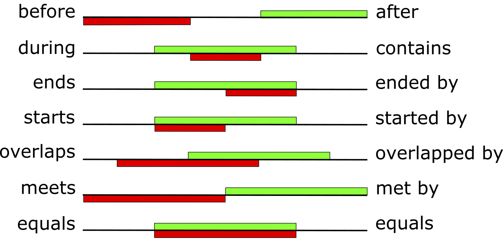

Time
Learning outcomes:
After completing this lesson you should be able to:
-
Explain the distinction between time as represented by specific date and times, and time as represented by qualitative descriptions.
-
Represent temporal information in first order logic, including using a HoldsAt predicate.
-
Identify which Allen relation holds between time intervals in a given example.
2.1 Introduction
This lesson is about representing knowledge about time
\(\def\HA{\mathit{HoldsAt}}\) \(\def\phi{\varphi}\)
A classical proposition is either true or false. So it cannot be true sometimes and false at other times. Hence a statement such as
- It is snowing in Leeds
does not really express a classical proposition. Its truth depends on when the statement is made (assume here the location is clear).
A corresponding classical proposition would be something like:
- It was snowing in Leeds at 11:22am 8/2/2032
This statement, if true, is eternally true.
In this lesson we consider three ways to deal with time:
- adding a time parameter to all predicates in a first order logic
- using a special \(\mathit{HoldsAt}\) predicate
- qualitative representation with time intervals, in a similar way to the qualitative space in the previous lesson.
2.2 Adding a time parameter
We can explicitly add time references to first-order formulas. For example
could mean John is happy at time \(t\).
In this representation each predicate is given an extra argument place specifying the time at which it is true. If we do this we need to describe properties of time itself in first-order logic.
2.2.1 First order axioms about time
To talk about the ordering of time points we introduce the special relation \(\leq\).
Being a (linear) order it satisfies the following axioms.
\(\begin{array}{rll} \text{1} & \forall t_1\,\forall t_2\,\forall t_3\, ((t_1 \leq t_2 \wedge t_2 \leq t_3) \to t_1 \leq t_3) & \mathsf{ (transitivity)}\\[2ex] \text{2} & \forall t_1\,\forall t_2\, (t_1 \leq t_2 \vee t_2 \leq t_1) & \mathsf{ (linearity)}\\[2ex] \text{3} & \forall t_1\,\forall t_2\, ((t_1 \leq t_2 \wedge t_2 \leq t_1) \to t_1 = t_2) & \mathsf{ (anti-symmetry)} \end{array}\)
We can define a strict ordering relation by:
\(\qquad \qquad t_1 < t_2 \quad \mathsf{ iff } \quad t_1 \leq t_2 \wedge \neg(t_1 = t_2)\)
Depending on what we want to model, we can add additional axioms such as these:
-
Time will continue for ever in the future:
\(\qquad \qquad\forall t \, \exists t' \, (t < t')\).
-
The infinite divisibility of time (usually called density):
\(\qquad \qquad\forall t_1\, \forall t_2 ((t_1 < t_2) \to \exists t_3\, ((t_1 < t_3) \wedge (t_3 < t_2))\).
2.2.2 Examples
Example
Sue is happy but will be sad:
\(\qquad\mathit{Happy}(\mathit{Sue}, 0) \wedge \exists t\,((0 < t) \wedge \mathit{Sad}(\mathit{Sue}, t))\)
Here I use \(0\) to stand for the present time.
We can describe more complex temporal constraints of a causal nature, as in the next example.
Example
When the sun comes out I am happy until it rains
\(\forall t \, (S(t) \to \forall u\,((t\leq u \wedge \neg \exists r\, ((t\leq r) \wedge (r\leq u) \wedge R(r))) \to H(u)))\)
The predicates \(S(x), R(x), H(x)\) correspond to:
- the sun is shining at time \(x\)
- it is raining at time \(x\),
- I am happy at time \(x\).
2.3 Using a Holds-At predicate
Rather than adding time to each predicate, several AI researchers have found it more convenient to use a special type of relation between propositions and time points:
\(\qquad \HA(\mathit{Happy}(\mathit{John}), t)\).
This looks like it is stepping outside first order logic, because the first parameter of \(\HA\) looks like a formula itself. When you see things like
\(\qquad \HA(\mathit{Sunny} \wedge \mathit{Warm}, t)\),
you should remember that putting logical connectives inside the arguments to predicates is simply not syntactically correct in first order logic. So this appears at first sight to be complete nonsense.
However, it is not nonsense, but rather a useful short-hand. Everything could be translated into perfectly correct first order logic. To do this we could take the expressions that appear as the first arguments of \(\HA\) to be terms built with function symbols. These function symbols would model the logical connectives, but they would be different from the actual connectives in first order logic.
For example, the axiom we see below, where \(\to\) appears twice,
\(\qquad (\HA(\phi, t) \wedge \HA(\phi \to \psi, t)) \to \HA(\psi, t)\)
would need to be a convenient way of asserting:
\(\qquad (\HA(\phi, t) \wedge \HA(\mathit{implies}(\phi,\psi), t)) \to \HA(\psi, t)\).
To develop this in detail would be time-consuming and is not necessary for this module. We will treat the usual way of writing this as a short-hand.
Axioms for Holds-At
- \((\HA(\phi, t) \wedge \HA(\phi \to \psi, t)) \to \HA(\psi, t)\)
- \(\neg \HA(\phi \wedge \neg \phi, t)\)
- \(\HA(\phi, t) \vee \HA(\neg \phi, t)\)
- \(\HA(\phi, t) \leftrightarrow \HA(\HA(\phi, t) , t')\)
- \(t \leq t' \leftrightarrow \HA((t \leq t'), t'')\)
- \(\forall t\, (\HA(\phi, t')) \to \HA(\forall t \,\phi, t')\)
The \(\HA\) predicate can be used to model general relationships between formulas. For example to capture a possible specification of the relation \(\phi\) causes \(\psi\). We could use:
2.4 Qualitative Reasoning about Time
2.4.1 The Allen relations
When talking about intervals and events in time we use words such as before and during to relate one event to another.
For example
- during my time at university I attended a module on knowledge representation, or
- the flooding happened before the new building was constructed.
Statements like these are making qualitative relationships between events that occur over intervals of time. The event the flooding took place over an interval and the event construction of the new building took place over another interval, and the qualitative relationship between these two intervals is that the first happened before the second one.
There are 13 possible relations between two intervals as shown in the diagram below. These are called the Allen relations and were described in the paper by J. F. Allen Maintaining knowledge about temporal intervals, Communications of the ACM, 26(11):832–843, 1983.
In the diagram below each of the seven rows shows a period of time and within that two intervals. One of these intervals is shown below the horizontal line representing the whole period, and the other interval is shown above the horizontal line. On the left hand side of the diagram is the name Allen gave to the relationship of the lower interval to the upper one. Note that the order is important here: saying \(A\) happened before \(B\) is quite different from saying \(B\) happened before \(A\). On the right hand side of the diagram is the name given to the relationship of the upper interval to the lower one. The equals relation is symmetric but none of the other 12 relations has this property.

Select for full text description of diagram.
This diagram describes 13 possible relations between two intervals. These are called Allen relations.
The diagram has seven rows showing a period of time as a horizontal line. Each of the lines has two bars on it: the bar below the line is red and represents the whole period; the bar above the line is green and represents the other interval.
On the left-hand side of the diagram is the name given to the relationship of the red bar to the green bar. On the right-hand side of the diagram is the name given to the relationship of the green bar to the red bar.
The first line is labelled before on the left and after on the right. The red bar is on the lower left-hand side of the line and the green bar is on the upper right-hand side. There is a space in between the two.
The second line is labelled during on the left and contains on the right. A short red bar is aligned in the line’s centre. A green bar is also aligned centrally above it.
The third line is labelled ends on the left and ended by on the right. A short red bar is aligned just right of centre. The green bar above is longer and aligned centrally and equal to the red bar on its right side.
The fourth line is labelled starts on the left and started by on the right. A short red bar is aligned to the left of centre. The green bar above is longer and aligned centrally and double the length of the red bar on its left side.
The fifth line is labelled overlaps on the left and overlapped by on the right. A long red bar extends from near to the start of the line on the left to just right of centre. A green bar of equal length extends from near to the start of the line on the right to left of centre. The two bars thus overlap in the centre.
The sixth line is labelled meets on the left and met by on the right. A red bar half the width of the line extends from the left side of the line to the centre. A green bar half the width of the line extends from the right side of the line so that it meets the red line in the centre.
The seventh line is labelled equals on the left and equals on the right. The red and green bar are the same width and aligned together in the centre of the line.
2.4.2 Compositional reasoning
An example of compositional reasoning:
- A occurs before B and B contains C
- What relationship has A to C?
- Answer: A occurs before C
Note there is not always just one answer to such questions. In the paper by Allen cited above you can find a table, called a composition table, in which the possible answers to such questions are calculated for every possible pair of the 13 relations between time intervals.
Composition tables have been calculated for many other systems of qualitative relations, including spatial ones we met in the previous lesson. These tables have proved to be of practical use in reasoning tasks involving qualitative concepts.
2.5 Tense logic
We will later (in Unit 6) see another way of representing time called Tense Logic This has two modalities, one looking into the past and one into the future. To explain how that works we need some general ideas on modal logic, which is the topic of the next lesson.